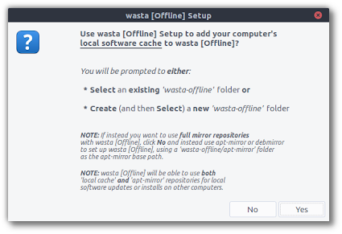
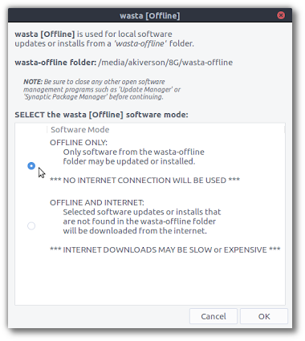
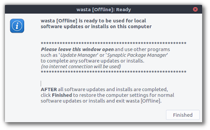

Wasta-Offline: Offline Software Updates and Installs
What is it?
Wasta-Offline is a simple utility for updating or installing software packages on a Linux machine from a local ‘wasta-offline’ folder, resulting in saving many hundreds of MB or even a few GB of internet downloads. Typically this is useful in areas with poor, expensive, or non-existent internet, but it is indeed quite handy for everyone without a central update caching server that has to support multiple Linux machines. It was written because aptoncd, apt-cache, and other offline tools didn’t fit our need and mostly seem to be abandoned.
How do I use it? Step One: Set up from a ‘Source Machine’
The first step in using Wasta-Offline is to populate the ‘wasta-offline’ folder from a ‘source machine’ for use on other ‘destination machines’. This can be done using 2 different methods (they can both be used in tandem if desired):
-
Wasta-Offline-Setup: The Wasta-Offline-Setup utility can be used to copy the existing local cached packages from the ‘source machine’ to a ‘wasta-offline’ folder, typically located on a USB drive. Here is a screenshot of Wasta-Offline-Setup: 
-
Specifically, Wasta-Offline-Setup will copy the packages to a
wasta-offline/local-cachefolder. Wasta-Offline-Setup will keep separate caches for 32-bit and 64-bit architectures, so if you want to use Wasta-Offline for destination machines of both architectures you will need to run Wasta-Offline-Setup from multiple source machines (one 32-bit source machine and one 64-bit source machine). -
Subsequent runs of Wasta-Offline-Setup will add to the
wasta-offline/local-cacherepository, so you can continue to build the local cache repository as you come into contact with machines that have packages already installed that you want to make available to other destination machines via Wasta-Offline. As a note, eventually, yourwasta-offline/local-cachefolder may need manual ‘cleaning out’ if you start to run out of space on the device holding the ‘wasta-offline’ folder, as duplicate outdated versions of packages get copied to it (multiple versions of Firefox, LibreOffice, etc., for example).
-
-
apt-mirror: If your destination machines have no internet, and/or the location of the source machine you will use to populate the ‘wasta-offline’ folder has good internet, you may want to use apt-mirror to populate the ‘wasta-offline’ folder for use on destination machines.
-
Using apt-mirror, you will create FULL copies of the specified internet repositories, so all packages in these repositories will be available to destination machines via Wasta-Offline, as of the date of the most recent apt-mirror run, regardless of whether or not they have been installed on the source machine. An apt-mirror ‘base path’ of
wasta-offline/apt-mirrorshould be used in order for destination machines running Wasta-Offline to be able to use these apt-mirror repositories. -
Apt-mirror has no gui, so you will need to set up a simple configuration file for it and run it from the terminal. As a note, setting up apt-mirror repositories like this will require many GB of downloads from the internet on the initial apt-mirror run. Later runs can be done to update the apt-mirror repositories, only downloading changes in the available packages in the repositories since the previous apt-mirror run.
-
How do I use it? Step Two: Use on a ‘Destination Machine’
See this screenshot of running Wasta-Offline on a destination machine:

The first thing to note is that Wasta-Offline has the option to run in 2 different “modes”, explained in detail here:
-
Offline Only (Default Mode): In this mode, a computer’s “apt sources” (listing of available software repositories) is replaced with the repositories found in the ‘wasta-offline’ folder (again this can be both the
wasta-offline/local-cacherepository generated from Wasta-Offline-Setup and any number ofwasta-offline/apt-mirrorrepositories generated by apt-mirror). This means that the only available packages for installs or updates while running Wasta-Offline will be from the ‘wasta-offline’ folder. If a desired package or dependency is not found in the ‘wasta-offline’ folder, it will not be able to be installed. -
Offline And Internet (‘Hybrid’ Mode): In this mode, the repositories found in the ‘wasta-offline’ folder are inserted at the beginning of the computer’s ‘apt sources’ (listing of available software repositories). This means that software packages from the ‘wasta-offline’ folder will be preferred over identical internet versions, but if software packages are installed or updated that do not exist in the ‘wasta-offline’ folder, they will be downloaded from the internet (after finishing using Wasta-Offline the user may then want to run Wasta-Offline-Setup on this machine in order to add the downloaded packages to the ‘wasta-offline’ folder for subsequent use on other destination machines).
Once selecting the mode that Wasta-Offline will run in, the necessary system adjustments are made and the following window is displayed:

This window needs to stay open while other software utilities are used (such as Synaptic Package Manager) to perform the actual software package updates or installs. Note that due to some unfortunate shortcomings, Software Center is not able to be used in the default ‘Offline Only Mode’, as it requires an internet connection to install software.
For terminal users, once Wasta-Offline is “Ready” you can use this command to update your system:
sudo apt-get dist-upgrade
Once all software package updates and installs have been performed, clicking the ‘Finished’ button will close Wasta-Offline and all ‘apt sources’ (listing of available software repositories) will be returned to their prior states.
Congratulations, you just saved lots of time and possibly lots of money getting your Linux system updated!
How do I install it?
For Wasta-Linux users, Wasta-Offline will automatically be installed when you update your system. However, for ‘source machines’ that will set up the ‘wasta-offline’ folder with cached software packages, you will need to install ‘wasta-offline-setup’ using Synaptic Package Manager or Ubuntu Software Center.
For other Ubuntu-based Linux distributions (Ubuntu, Linux Mint, Elementary OS, etc), the easiest way to install Wasta-Offline and Wasta-Offline-Setup (for source machines) is to use a Terminal *. Copy each of these three commands and enter them in the Terminal (one at a time; you will need to provide an administrative password):
sudo add-apt-repository ppa:wasta-linux/wasta-apps
sudo apt-get update
sudo apt-get install wasta-offline wasta-offline-setup
If you want to install Wasta-Offline on destination computers without internet access, it should be possible to manually install the wasta-offline_<version-number>.deb from the wasta-offline/local-cache/... folder. The ‘dependencies’ are kept to a minimum for Wasta-Offline to allow this use case.
As a practical usage example, the individual setting up the ‘wasta-offline’ folder on the source machine could copy these wasta-offline_<version-number>.deb installers to the root of the USB device used to deliver the ‘wasta-offline’ folder, so that destination machine users will find it easily in order to install, after which these users can launch Wasta-Offline to perform the rest of the software package updates or installs.
* To open the Terminal, in Wasta-Linux go to Menu > Administration > Terminal, or press the following keys at the same time: Ctrl + Alt + T